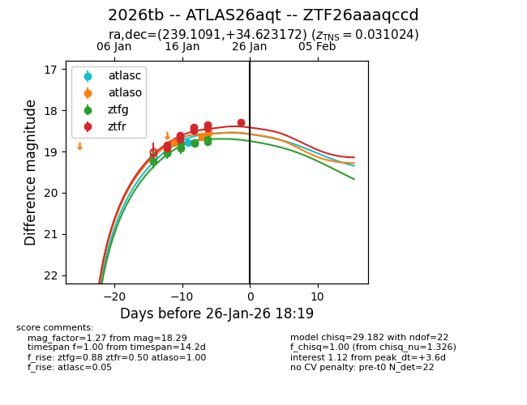
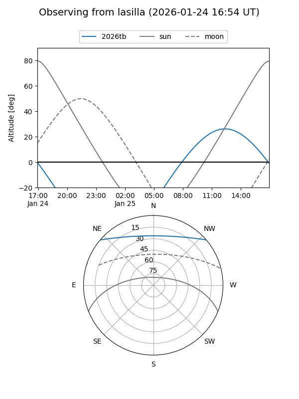
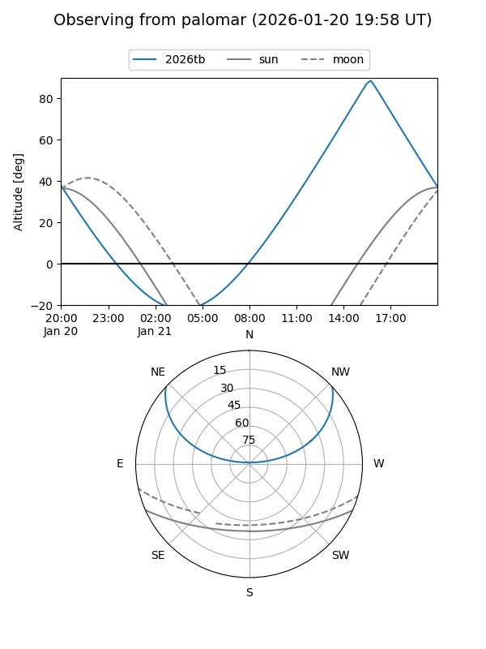
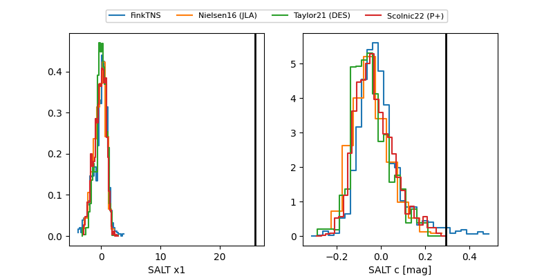

2026tb
Target 2026tb at 2026-01-27 16:51
Aliases and brokers:
FINK: link
Lasair: link
ALeRCE: link
TNS: link
YSE: link
alt names
ZTF26aaaqccd (ztf,fink_ztf)
2026tb (tns,yse)
ATLAS26aqt (atlas)
Coordinates:
equatorial (ra, dec) = 239.1091,+34.62317
equatorial (HMS+DMS) = 15:56:26.18,+34:37:23.42
galactic (l, b) = (55.4293,+49.95427)
Flags:
confirmed ia
Photometry:
last atlasc=18.77, atlaso=18.55, ztfg=18.71, ztfr=18.29
2 atlasc, 3 atlaso, 9 ztfg, 9 ztfr detections
Lightcurve

Visibility


Additional plots
